Objectives
Layout a new Android project with a single activity. Design this activity to permit simple sports activities to be specified. Implement the Activity class to support these controls
Create Project
Download and install the latest Android/Ecliose SDL
Create a new Android application, with the following properties:

Note the 'Minimum Required SDK' which may be different from the default.
Accept all the defaults in the wizard - except the name of the main activity:

The project will look like this:

With the activity_donate open in the visual designer:

It is important to become familiar with the structure and purpose of the three panes surrounding the Donation 'canvas':
Pallette:
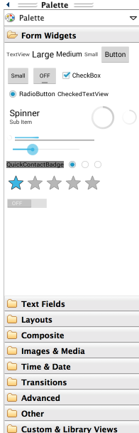
Outline
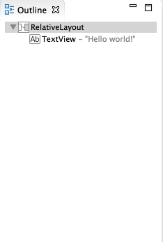
Properties
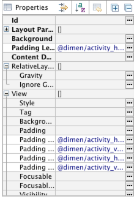
These views are closely related - and you will need to monitor the information displayed there continually as you evolve the appearance of your activities screens.
Layout Donation Activity
For this lab, out objective is to reproduce in Android this feature from this web app:

In eclipse, delete the current 'Hello World' text, and drag and drop a new'LargeText' form widget onto the canvas. Look closely at the following:

Note carefully the following features:
- the guides tyeing the text to the left, top and right corner
- in Outline - the name of the control has been changed from a default to 'donateTitle'. This is changed by selecting the item in outline, and selecting 'Edit ID' from the context menu.
- in Properties - where we entered 'Welcome Homer' into the text field
Recreate the above precisely.
A 'Lint warning' will have popped up in the top right:

Click on this:
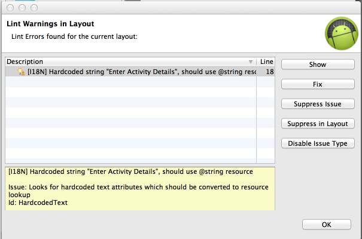
.. and select 'Fix' - this is inviting us to give a name to the string, which will be stored in a separate 'string.xml' file. Give it the name 'donateTitle':

Save everything - and the lint warning should (eventually) disappear.
Locate the following two files and inspect them closely:
res/layout/activity_dontate.xml
<RelativeLayout xmlns:android="http://schemas.android.com/apk/res/android"
xmlns:tools="http://schemas.android.com/tools"
android:layout_width="match_parent"
android:layout_height="match_parent"
android:paddingBottom="@dimen/activity_vertical_margin"
android:paddingLeft="@dimen/activity_horizontal_margin"
android:paddingRight="@dimen/activity_horizontal_margin"
android:paddingTop="@dimen/activity_vertical_margin"
tools:context=".CreateActivity" >
<TextView
android:id="@+id/textView1"
android:layout_width="wrap_content"
android:layout_height="wrap_content"
android:layout_alignParentLeft="true"
android:layout_alignParentRight="true"
android:layout_alignParentTop="true"
android:text="@string/CreateActivityTitle"
android:textAppearance="?android:attr/textAppearanceLarge" />
</RelativeLayout>res/values/strings.xml
<?xml version="1.0" encoding="utf-8"?>
<resources>
<string name="app_name">pacemaker</string>
<string name="action_settings">Settings</string>
<string name="hello_world">Hello world!</string>
<string name="CreateActivityTitle">Enter Activity Details</string>
</resources>Note the relationship between 'donateTitle' in both files. Also note we have a superfluous 'hello_world' string left over from the generated app. We can delete this now.
Donate Button
Place a button directly on to the activity - attached to the bottom of the screen as shown:
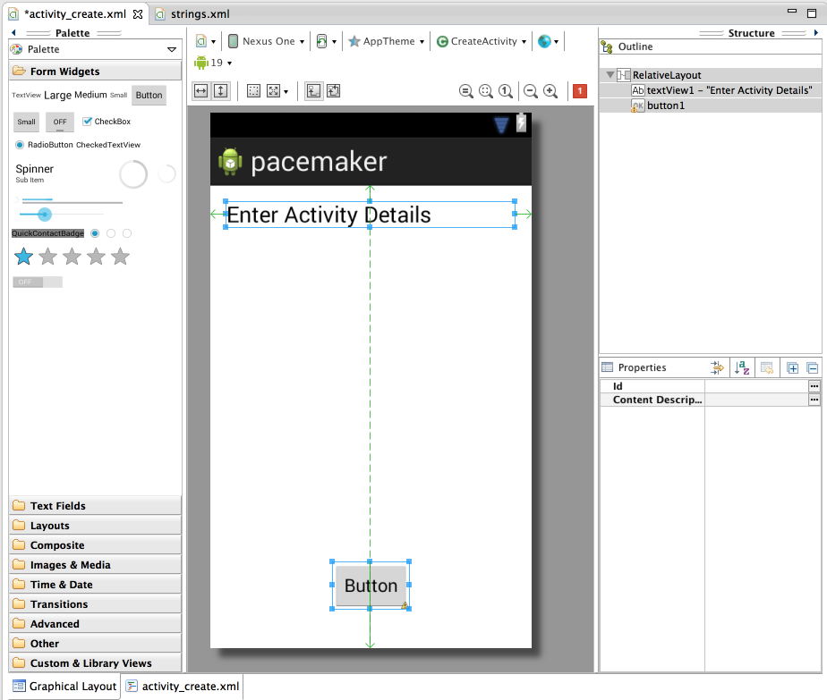
Rename both the button and the text field in the Outline view:
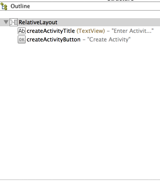
Do this by selecting the item and invoking 'Edit ID' from the context menu.
Fix the lint error - and give the button the text 'Donate!'. If all goes as expected, your xml files should be like this:
activity_donate.xml
<RelativeLayout xmlns:android="http://schemas.android.com/apk/res/android"
xmlns:tools="http://schemas.android.com/tools"
android:layout_width="match_parent"
android:layout_height="match_parent"
android:paddingBottom="@dimen/activity_vertical_margin"
android:paddingLeft="@dimen/activity_horizontal_margin"
android:paddingRight="@dimen/activity_horizontal_margin"
android:paddingTop="@dimen/activity_vertical_margin"
tools:context=".CreateActivity" >
<TextView
android:id="@+id/createActivityTitle"
android:layout_width="wrap_content"
android:layout_height="wrap_content"
android:layout_alignParentLeft="true"
android:layout_alignParentRight="true"
android:layout_alignParentTop="true"
android:text="@string/createActivityTitle"
android:textAppearance="?android:attr/textAppearanceLarge" />
<Button
android:id="@+id/createActivityButton"
android:layout_width="wrap_content"
android:layout_height="wrap_content"
android:layout_alignParentBottom="true"
android:layout_centerHorizontal="true"
android:layout_marginBottom="22dp"
android:text="@string/createActivityButton" />
</RelativeLayout>strings.xml
<?xml version="1.0" encoding="utf-8"?>
<resources>
<string name="app_name">pacemaker</string>
<string name="action_settings">Settings</string>
<string name="createActivityTitle">Enter Activity Details</string>
<string name="createActivityButton">Create Activity</string>
</resources>If there is a deviation from the above - retrace your steps (delete the button) until you can match the above.
We can now switch our attention to the Java Activity class Donate:
package org.pacemaker;
import android.os.Bundle;
import android.app.Activity;
import android.view.Menu;
public class CreateActivity extends Activity
{
@Override
protected void onCreate(Bundle savedInstanceState)
{
super.onCreate(savedInstanceState);
setContentView(R.layout.activity_create);
}
@Override
public boolean onCreateOptionsMenu(Menu menu)
{
// Inflate the menu; this adds items to the action bar if it is present.
getMenuInflater().inflate(R.menu.create, menu);
return true;
}
}For any 'controls' a user can interact with we usually find it useful to associate a class member with that object. Currently we have one only on - a Button. The text fields we dont consider 'interactive' as such, so we will not include those.
Insert the following new field into the class:
private Button createActivityButton;The class will have to be imported. The class name will always match the name in the Pallette:
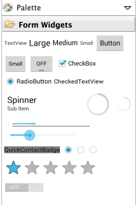
We are free to call the variable anything we like. However, in order to keep confusion to a minimum, always call the variable by the same name you used in the Outline view:
In onCreate - we need to initialise this variable:
createActivityButton = (Button) findViewById(R.id.createActivityButton);We might also add a logging message so we can have some feedback as the app launches:
Log.v("Pacemaker", "got the CreateActivity button");This is the complete activity class:
package org.pacemaker;
import android.os.Bundle;
import android.app.Activity;
import android.util.Log;
import android.view.Menu;
import android.widget.Button;
public class CreateActivity extends Activity
{
private Button createActivityButton;
@Override
protected void onCreate(Bundle savedInstanceState)
{
super.onCreate(savedInstanceState);
setContentView(R.layout.activity_create);
createActivityButton = (Button) findViewById(R.id.createActivityButton);
Log.v("Pacemaker", "got the CreateActivity button");
}
@Override
public boolean onCreateOptionsMenu(Menu menu)
{
// Inflate the menu; this adds items to the action bar if it is present.
getMenuInflater().inflate(R.menu.create, menu);
return true;
}
}Finding the log message can be very difficult, unless you set a filter. In the 'LogCat' view in eclipse, create a filter like this:

If you then select the filter, we should see our message:
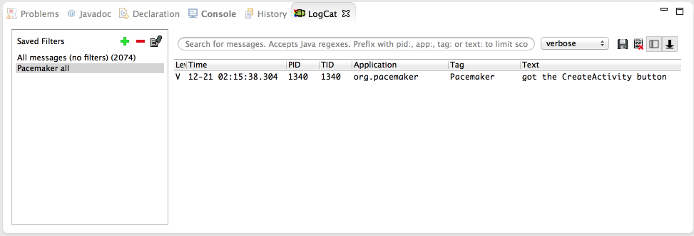
Documentation
The android documentation is particularly helpful and well designed. These are the two key starting points:
- http://developer.android.com/guide/components/index.html
- http://developer.android.com/reference/packages.html
The first is designed to be read though as a guide, perhaps independent of any work in eclipse. You should get into the habit of devoting an hour or two a week just reading this section.
The Reference guide should always be open as you are working on labs or projects, and you should make a serious effort to get to grips with at least some of the information here.
Taking the Button class we have just started using. We can immediately find the reference just by knowing the import statement in our Activity class:
import android.widget.Button;.. translates to
(note the last three segments match the package name). Open this page now. Read just as far as the "Button Style" heading. There seems to be two ways of learning when an button event occurs. The first method is using the event handler/listener - but a second easier method is also available.
Try this now. Bring in a new method into Donate class:
public void createActivityButtonPressed (View view)
{
Log.v("Donate", "CreateActivity Button Pressed!");
}Then, edit the activity_donate xml file - and add a new attribute into the Button xml fragment:
<Button
android:id="@+id/createActivityButton"
android:layout_width="wrap_content"
android:layout_height="wrap_content"
android:layout_alignParentBottom="true"
android:layout_centerHorizontal="true"
android:layout_marginBottom="22dp"
android:text="@string/createActivityButton"
android:onClick="createActivityButtonPressed"/>(the very last entry)
Save everything and execute the app, and monitor the log as you press the button:
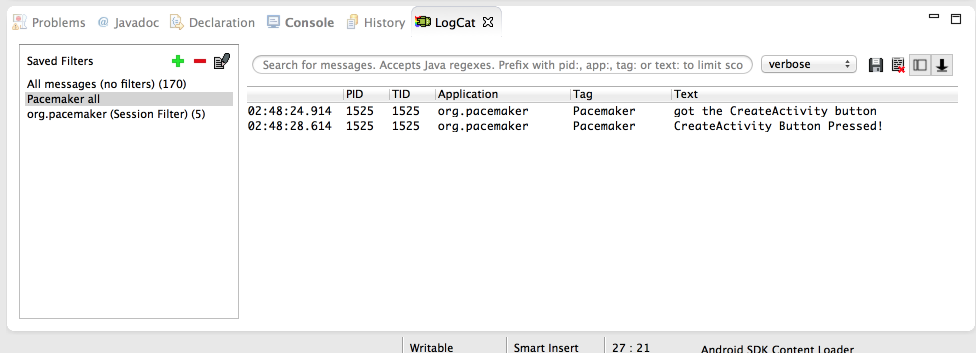
We now have our first interaction working!
Research + New Control Layout
Recall the UI we are trying to implement:

We need a Radio Buttons, some sort of selection/combo box + a progress bar. These can be found in various locations in the pallette:
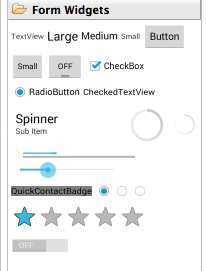 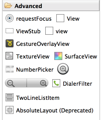
RadioGroup, ProgressBar and NumberPicker seem likely candidates. The names of these controls are exactly as advertised, and we can expect them to be in the 'widgets' package. To verify this, try importing them at the top of the Donate activity class:
import android.widget.NumberPicker;
import android.widget.TextView;... and we can bring in three fields into the class:
private Button createActivityButton;
private TextView activityType;
private TextView activityLoction;
private NumberPicker distancePicker;We can also open up three pages of documentation - which we can reverse engineer from the package/class names:
- http://developer.android.com/reference/android/widget/RadioGroup.html
- http://developer.android.com/reference/android/widget/ProgressBar.html
- http://developer.android.com/reference/android/widget/NumberPicker.html
Note this time we have gone to the Activity class before actually creating the controls. We should do this now - and remember to use the same names (for the IDs) as we create the controls.


Getting the layout +id names as shown above may take some practice. However, it is an essential skill to get on top of, even it it takes a lot of trial and error.
For reference purposes (try to do it your self), these are the relevant generated xml files:
<RelativeLayout xmlns:android="http://schemas.android.com/apk/res/android"
xmlns:tools="http://schemas.android.com/tools"
android:layout_width="match_parent"
android:layout_height="match_parent"
android:paddingBottom="@dimen/activity_vertical_margin"
android:paddingLeft="@dimen/activity_horizontal_margin"
android:paddingRight="@dimen/activity_horizontal_margin"
android:paddingTop="@dimen/activity_vertical_margin"
tools:context=".CreateActivity" >
<TextView
android:id="@+id/createActivityTitle"
android:layout_width="wrap_content"
android:layout_height="wrap_content"
android:layout_alignParentLeft="true"
android:layout_alignParentRight="true"
android:layout_alignParentTop="true"
android:text="@string/createActivityTitle"
android:textAppearance="?android:attr/textAppearanceLarge" />
<Button
android:id="@+id/createActivityButton"
android:layout_width="wrap_content"
android:layout_height="wrap_content"
android:layout_alignParentBottom="true"
android:layout_centerHorizontal="true"
android:layout_marginBottom="22dp"
android:text="@string/createActivityButton"
android:onClick="createActivityButtonPressed"/>
<EditText
android:id="@+id/activityType"
android:layout_width="wrap_content"
android:layout_height="wrap_content"
android:layout_alignLeft="@+id/createActivityTitle"
android:layout_alignParentRight="true"
android:layout_below="@+id/createActivityTitle"
android:layout_marginTop="27dp"
android:ems="10"
android:hint="@string/activityTypeHint" >
<requestFocus />
</EditText>
<EditText
android:id="@+id/activityLocation"
android:layout_width="wrap_content"
android:layout_height="wrap_content"
android:layout_alignLeft="@+id/activityType"
android:layout_alignParentRight="true"
android:layout_below="@+id/activityType"
android:layout_marginTop="20dp"
android:ems="10"
android:hint="@string/activityLocationHint" />
<NumberPicker
android:id="@+id/distancePicker"
android:layout_width="wrap_content"
android:layout_height="wrap_content"
android:layout_alignRight="@+id/activityLocation"
android:layout_below="@+id/activityLocation"
android:layout_marginRight="40dp"
android:layout_marginTop="22dp" />
<TextView
android:id="@+id/distanceLabel"
android:layout_width="wrap_content"
android:layout_height="wrap_content"
android:layout_alignLeft="@+id/activityLocation"
android:layout_alignTop="@+id/distancePicker"
android:layout_marginLeft="30dp"
android:layout_marginTop="50dp"
android:layout_toLeftOf="@+id/distancePicker"
android:text="@string/distanceLabel"
android:textAppearance="?android:attr/textAppearanceMedium" />
</RelativeLayout><?xml version="1.0" encoding="utf-8"?>
<resources>
<string name="app_name">pacemaker</string>
<string name="action_settings">Settings</string>
<string name="createActivityTitle">Enter Activity Details</string>
<string name="createActivityButton">Create Activity</string>
<string name="activityTypeHint">Enter Activity type...</string>
<string name="activityLocationHint">Enter Location...</string>
<string name="distanceLabel">Distance</string>
</resources>If we have our naming conventions right - then we can bind to these new controls in onCreate:
createActivityButton = (Button) findViewById(R.id.createActivityButton);
activityType = (TextView) findViewById(R.id.activityType);
activityLocation = (TextView) findViewById(R.id.activityLocation);
distancePicker = (NumberPicker) findViewById(R.id.distancePicker);This is the complete Donate class:
package org.pacemaker;
import android.os.Bundle;
import android.app.Activity;
import android.util.Log;
import android.view.Menu;
import android.view.View;
import android.widget.Button;
import android.widget.NumberPicker;
import android.widget.TextView;
public class CreateActivity extends Activity
{
private Button createActivityButton;
private TextView activityType;
private TextView activityLocation;
private NumberPicker distancePicker;
@Override
protected void onCreate(Bundle savedInstanceState)
{
super.onCreate(savedInstanceState);
setContentView(R.layout.activity_create);
createActivityButton = (Button) findViewById(R.id.createActivityButton);
activityType = (TextView) findViewById(R.id.activityType);
activityLocation = (TextView) findViewById(R.id.activityLocation);
distancePicker = (NumberPicker) findViewById(R.id.distancePicker);
}
public void createActivityButtonPressed (View view)
{
Log.v("Pacemaker", "CreateActivity Button Pressed!");
}
@Override
public boolean onCreateOptionsMenu(Menu menu)
{
// Inflate the menu; this adds items to the action bar if it is present.
getMenuInflater().inflate(R.menu.create, menu);
return true;
}
}NumberPicker
This is our reference documentation:
which is a little overwhelming. Back in the guides:
we might find some useful tutorial type introduction to this control - under 'User Interface' - 'Input Controls'
.. and this is the page on 'pickers'
This documentation is concerned with Fragments - a concept that may be difficult to grasp initially, and also explores the usage of date and time pickers.
We can get up and running without this much fuss. Returning to the documentation, these three methods should be sufficient initially:
- http://developer.android.com/reference/android/widget/NumberPicker.html#setMaxValue(int)
- http://developer.android.com/reference/android/widget/NumberPicker.html#setMinValue(int)
- http://developer.android.com/reference/android/widget/NumberPicker.html#getValue()
In onCreate, initialise the values:
distancePicker.setMinValue(0);
distancePicker.setMaxValue(20);And in createActivityButtonPressed:
public void createActivityButtonPressed (View view)
{
int distance = distancePicker.getValue();
Log.v("Pacemaker", "CreateActivity Button Pressed with " + distance);
}Run this now - and verify that it operates as expected (see the actual amounts in the log view).
List Activities
We would like to display the activities we have just created, mirroring the approach taken by the web application:
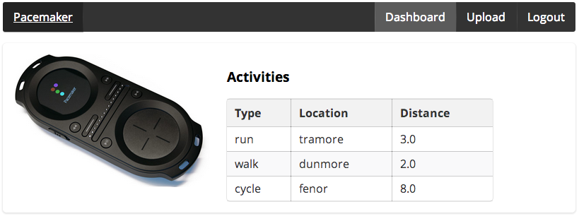
Select the package containing the CreateActivity class, and create a new activity using the wizard (New->Android->Android Activity:

Accept all the defaults, and call the activity ActivitiesList:

In the designer, place a Large Text Field + a ListView (from the Composite panel) directly on to the canvas like this:

Note the names used for the IDs in the Outline view.
Activities Model
Create a new package called 'org.pacemaker.models' - and incorporate a new class to represent Activities:
package org.pacemaker.models;
import static com.google.common.base.Objects.toStringHelper;
import com.google.common.base.Objects;
public class Activity
{
public Long id;
public String type;
public String location;
public double distance;
public Activity()
{
}
public Activity(String type, String location, double distance)
{
this.type = type;
this.location = location;
this.distance = distance;
}
@Override
public String toString()
{
return toStringHelper(this).addValue(id)
.addValue(type)
.addValue(location)
.addValue(distance)
.toString();
}
@Override
public boolean equals(final Object obj)
{
if (obj instanceof Activity)
{
final Activity other = (Activity) obj;
return Objects.equal(type, other.type)
&& Objects.equal(location, other.location)
&& Objects.equal(distance, other.distance);
}
else
{
return false;
}
}
@Override
public int hashCode()
{
return Objects.hashCode(this.id, this.type, this.location, this.distance);
}
}This use the guava library for utility support:
You will need to download the latest version, copy it into the 'lib' folder of the project, and place it on the path (right clink on the jar file and select 'build path->add to build path')
Back in the CreateActivity, we might create a list to store the activities:
private List<Activity> activities = new ArrayList<Activity>();...and populate this list in createActivityButtonPressed:
public void createActivityButtonPressed (View view)
{
double distance = distancePicker.getValue();
Activity activity = new Activity (activityType.getText().toString(), activityLocation.getText().toString(), distance);
activities.add(activity);
Log.v("Pacemaker", "CreateActivity Button Pressed with " + distance);
}Rendering the Activities
Place a new button on the CreateAvtivity panel to trigger the display of the activities list:

... and install an event handler for this button:
public void listActivityButtonPressed (View view)
{
Log.v("Pacemaker", "List Activities Button Pressed");
}Manually 'wire-up' the event handler by inserting the appropriate entry in the layout file:
<Button
android:id="@+id/avtivitiesListButton"
android:layout_width="wrap_content"
android:layout_height="wrap_content"
android:layout_alignLeft="@+id/createActivityButton"
android:layout_alignParentBottom="true"
android:layout_alignRight="@+id/createActivityButton"
android:layout_marginBottom="16dp"
android:onClick="listActivityButtonPressed"
android:text="@string/activities_list" />(second last entry)
To switch views, we start a new activity with the correct intent:
public void listActivityButtonPressed (View view)
{
Log.v("Pacemaker", "List Activityies Button Pressed");
Intent intent = new Intent(this, ActivitiesList.class);
startActivity (intent);
}Exercises
Archive of lab so far:
Exercise 1:
We have a list of activities in the CreateActivity class:
private ArrayList<Activity> activities = new ArrayList<Activity>();Which is populated in the button event handler:
public void createActivityButtonPressed (View view)
{
double distance = distancePicker.getValue();
Activity activity = new Activity (activityType.getText().toString(), activityLocation.getText().toString(), distance);
activities.add(activity);
Log.v("Pacemaker", "CreateActivity Button Pressed with " + distance);
}How do we display this in the ActivityList?
public class ActivitiesList extends Activity
{
@Override
protected void onCreate(Bundle savedInstanceState)
{
super.onCreate(savedInstanceState);
setContentView(R.layout.activities_list);
}
@Override
public boolean onCreateOptionsMenu(Menu menu)
{
/ Inflate the menu; this adds items to the action bar if it is present.
getMenuInflater().inflate(R.menu.activities_list, menu);
return true;
}
}To populate the array - you will need to use an adapter:
This is a example of the adapter pattern:
But you will need to find a way of getting the arraylist of activities to the view. One technique is based on the memento pattern:
In android, this technique is implemented using the Parcelable class:
See if you can have the list of activities displayed in the ActivitiesList view. We will present a solution to this in next weeks lab.